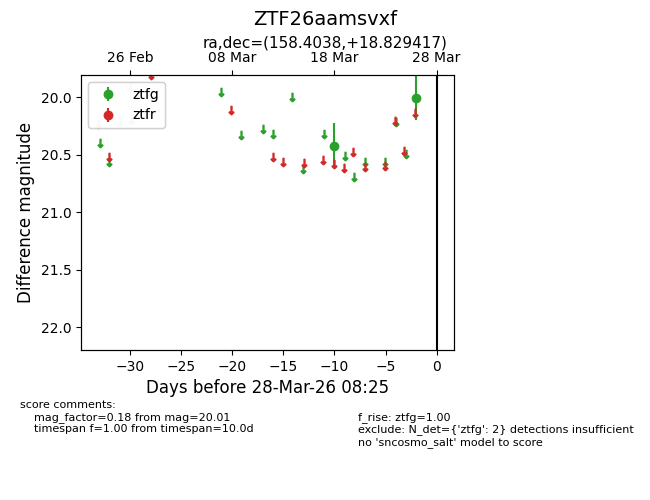
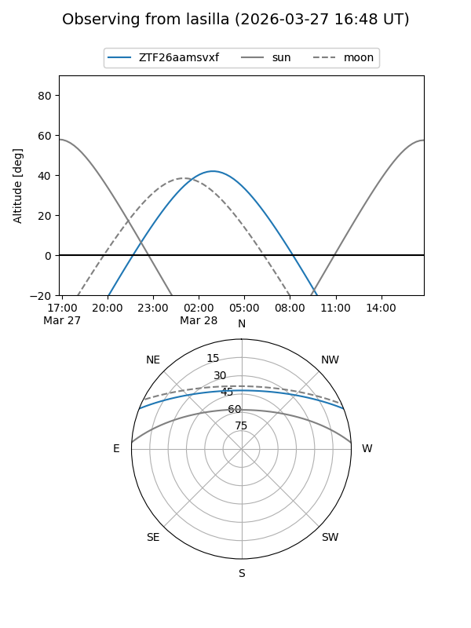
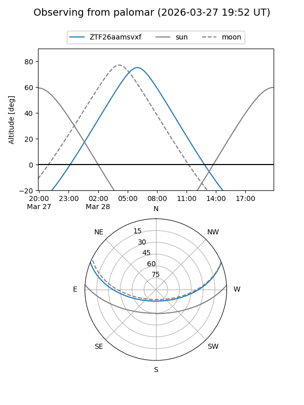

ZTF26aamsvxf
Target ZTF26aamsvxf at 2026-03-28 08:28
Aliases and brokers:
FINK: link
Lasair: link
ALeRCE: link
alt names
ZTF26aamsvxf (ztf,fink_ztf)
Coordinates:
equatorial (ra, dec) = 158.4038,+18.82942
equatorial (HMS+DMS) = 10:33:36.91,+18:49:45.90
galactic (l, b) = (220.2344,+57.32524)
Flags:
Photometry:
last ztfg=20.01
2 ztfg detections
Lightcurve

Visibility


Additional plots